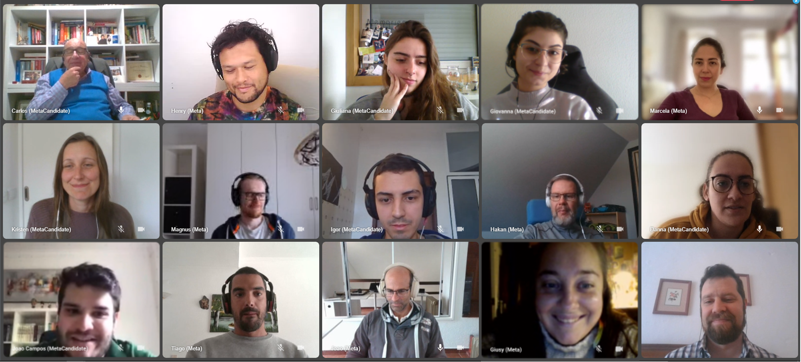

May 2022 (inaugural) MetaNewsletter
A techy start-up on a well-being mission
Welcome to our very first blog post on this humble homepage. We are a start-up not-for-profit in the well-being sector.
You’ll soon read about our most recent achievementsand how we’re accelerating towards further developments on the horizon. But before we delve into these exciting updates, let’s begin with a brief introduction of who we are, our aspirations, and how we intend to get there.
Our mission can be summed up in a rather long less-than-catchy sentence:
MetaProvide brings goodness to the world by developing administrative wellbeing-services; through innovative IT and supportive human interaction.
Not entirely clear? Fair enough. Sometimes a video helps. This one describe our service Adminly.
So is MetaProvide connected to Facebook?
No! Absolutely not. The similarities in name are...unfortunate, to say the least. We are completely opposed to data-mining for profit and that's part of the reason we're creating a platform for well-being providers and explorers to safely connect.
Relieved to have cleared that up! Now let's answer those all-important who, what, where, when, why, and how questions (although not in that order)!
Who are we?
A diverse team of programmers, product developers, administrators, communicators, business advisers, and a former Buddhist monk give life to MetaProvide. We have different backgrounds and beliefs, but share a common vision motivated by core values of kindness, integrity, trustworthiness and sustainability.
Where are we based?
Our not-for-profit is registered in Sweden and we are developing a retreat-place in Portugal, but we are truly an international community. Thanks to our online open source platform, our team from around the world work with well-being providers throughout Europe.
What are we doing?
We are building services for the commercial market, but with a deep commitment to supporting the greater good. These services will help both well-being providers and explores to truly grow and succeed, especially in challenging times.
How are we contributing to the greater good?
Our three core projects are:
-
A web-based all-in-one administrative tasks platform, designed specifically for well-being providers, with personalized support from virtual assistants.
-
An entirely free service to connect well-being explorers with vetted providers, according to their individual needs and aspirations.
-
Our bit of land in the Portuguese country-side for harmonizing multi-disciplinary approaches to well being through permaculture, tech-labs and meditation huts.
When will these services be available?
We are thrilled to launch Adminly in August this year (keep reading for a sneak peak at our platform)! In 2023 we will offer MetaFriend and begin developing MetaLand.
Why are we on this mission?
The global market for well-being services is growing at an accelerating rate. Accompanying this growth is an increase in yoga teachers, meditation coaches, therapists and providers of other holistic approaches.
Wellbeing providers often work independently, giving a sense of freedom, but also a lack of support with managing the time-consuming administrative tasks of running a business. Covid arguably accelerated and compounded both this demand for well-being services and transition to more independent work.
We are here to make a positive difference by building services that address these needs in the well-being sector.
"It’s interesting how you can have different people with different agendas with different approaches to life, and visions, coming together and somehow finding a common purpose in the Meta mission.”
- Joao Barreira, provider in Adminly testing phase
A Sneak Peak at Adminly
Adminly aims to help people help more.
To ensure Adminly is tailored for the specific needs of well-being providers, our product team has been working closely with them throughout the development process. The collective diligence of the product team has resulted in considerable progress and proven beneficial for our dear providers involved in the testing phase.
As promised, here's a glimpse at the administrative tasks platform designed with providers front and center.
A key part of this testing phase involved the in-depth research and personalized-support of virtual assistants carefully matched with our providers. Here's what some of our providers have to say about their experience with developing Adminly:
"Thanks to my VA's help and support, I feel there is more creativity within me. It's a learning process to be able to tell her how she can help me. This is an excellent exercise because it makes me reflect on the things that I really need help with or the things I need to do and things I would like to do. The experience of working with MetaProvide has been great. I appreciate the curiosity and interest people have shown in understanding how I work."
- Stephan Pende, Clinical Psychologist and Spiritual Mentor
"My VA (Virtual Assistant) never says no - she´s always able to find a solution because I don’t have time for all the things I’m supposed to do and she not only gives me solutions but also suggestions"*
- Ricardo Rangel, Endocrinologist and Ayurveda Specialist
"Collaborating with my VA evolved in an unexpected way. It is having a positive impact on how I conduct my work. Her perspective introduced me to things I hadn't thought of before, contributing to reaching my objectives and self development as well as what my clients expect of me, what people are looking for. In practical terms the relationship pushed me to work on my website and I am now considering the idea of starting a podcast. I love the energy of the people working for the project. It's such a diverse group of people coming together and sharing the same purpose. This project is not only practical or simply a business, but a project driven by a process of self discovery and purpose."
- Joao Barreira, Psychotherapist and Mindfulness Coach
If you don't have time to read these lovely quotes, a picture does say a thousand words. Just look at these smiles!
Recent achievements
The sincere curiosity, insightful conversations, challenging questions and unwavering support of our various stakeholders have accelerated us forward (in the right direction)! We're excited about our achievements together and greatly appreciate your interest in furthering our work.
Growing our team
MetaProvide has experienced incredible growth this year. Our HR hero, Marcela, has concentrated much of her time on recruitment with five new positions identified, approved, and successfully filled. So we are currently comprised of sixteen developers, two advisors (Tan Ariyo and Martin J) and five people on the board (including our deputees Rolf and Anna).

Strengthening our structure
There has been a heroic volume of fine work executed by Håkan, taking care of much of the administrative and financial side of MetaProvide, whilst Carlos coordinates the organization's work and contributes with important business perspectives.
None of this would be possible without the many talents of Henry, Magnus, Igor and Martin, our glorious Tech Team. These titans lavish no shortage of care and attention to our fifteen servers, tinkering with various platforms, and many other experiments summoned up from dazzling code.
Investing in our future
To date, over 400,000€ has been contributed to MetaProvide in the form of membership fees. Last autumn, we also received a membership contribution of 5 ETH. An infrastructure has since been created to easily and transparently accept cryptocurrencies, both for donations and membership contributions.
On our horizon
Our team will continue to grow with new virtual assistants to be introduced in the coming weeks. We aim to move beyond the eight providers we are already supporting to a total of forty providers.
For the second year running, the ever-expanding MetaTeam will meet in Portugal for five days this July. We’re planning some great activities and definitely won’t miss the opportunity to visit MetaLand and Sumedharama, a Buddhist Monastery in Ericeira. Be sure to check out our next blog for a video of these places.
An external expert, Ron Trevor, central for developing the Swarm-Nextcloud plugin is also with us several times a week. What’s that all about? Ron’s involvement has its origins in a simple gift to our main sponsor and benefactor Viktor Trón.
As a result of this effort, a tangible WEB3.0 product is on the rise. Through solid backend work, we have married Nextcloud with Swarm’s decentralized cloud storage. All Nextcloud users will be able to interact with Swarm storage, dragging and dropping files without having to leave Nextcloud. If you are curious about this development, you can follow the work at Github.
Can you support our well-being mission?
Today, we are asking for your financial support to help us further the mission through our products (Adminly and MetaFriend) and MetaLand (our future place of “refuge”).
To discuss the different ways in which you can contribute, please contact our Fundraising Manager at fundraising@metaprovide.org.
Thank you again for joining the movement at MetaProvide of making a positive difference in the lives of many…one person and one organization at a time.